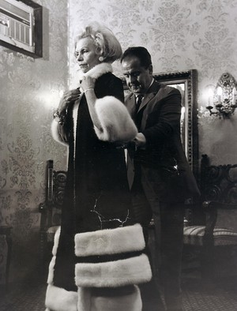

Stefan Brown
An Israeli furrier,High sociaty person,and an uncle of my dear wife's mother.

Stefan Brown and a customer at his shop in Tel Aviv.
- 1914 - Born in Bratislava, Slovakia.
Born in Bratislava to a Hungarian-speaking Jewish family and studied furry as a boy from his uncle. - 1938 - Imigrant to israel.
Stefan imigrant to Israel, which was govern by the british empire, with his big brother. - 1940 - Launch a fashion house in Tel Aviv.
- 50's - His fashion house start to be dominate in Tel Aviv.
From the 1950s, his fashion house on Allenby Street in Tel Aviv, which dealt with furry, became one of the most important cities in the city, and Brown was one of the leading designers of the Israeli high society of those days, Diaspora Jewry and even stars like Marlen Dietrich, Elizabeth Taylor and Sophia Loren. - 80's - The end of furriers industry.
The end of the 1980s, after public opinion on animal rights developed and called for the end of the fur industry, the store's prestige declined until it was sold. - 1990 - Died at Tel-Aviv, Israel.
Die from heart attack in Tel-Aviv, Israel, at the age of 76.He was buried at Kiryat-Shaool cemetery,Tel Aviv. - 2000's - The shop changed its purpose to restaurant.